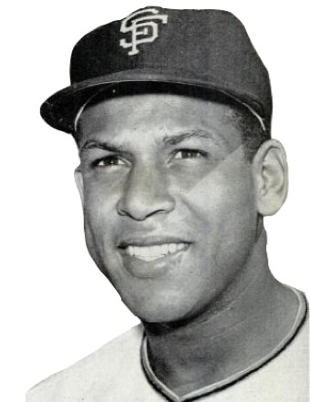
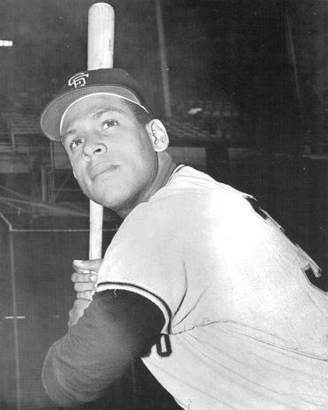
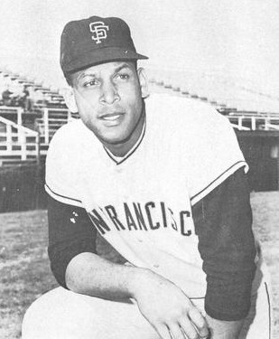
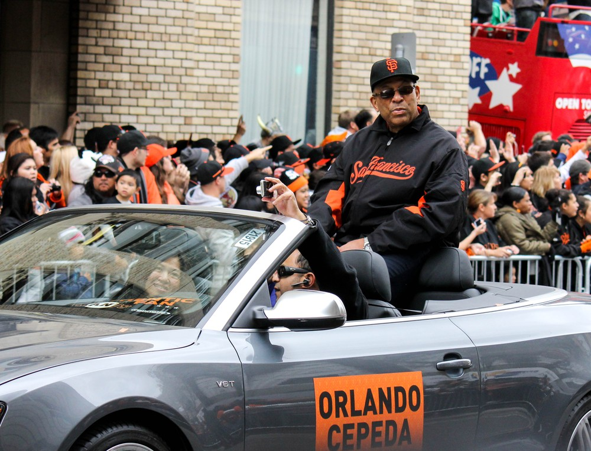

Orlando “Baby Bull” Cepeda
The first star San Francisco could call its own: a homer in the first big league game ever played in California and 142 RBIs in 1961.
The Orlando Cepeda Story
Willie Mays was a New York star who moved here. Orlando Cepeda was ours from day one. He played first base in the very first big league game ever played in California, homered in it, and by the end of that summer San Francisco fans had voted him the most valuable Giant over Mays himself. Mays put it best: Orlando was theirs from scratch.
Orlando Manuel Cepeda Pennes was born September 17, 1937, in Ponce, Puerto Rico. His father, Pedro, was one of the greatest players the island ever produced, a shortstop and batting champion they called Perucho and the Bull, which made Orlando the Baby Bull. The family was poor, Perucho gambled, and Orlando grew up around crime and drugs. He later wrote that baseball saved him. A knee injury playing basketball at 15 laid him up for a long time, and he came out of it six inches taller and more than 40 pounds heavier.
He was a batboy for the Santurce Crabbers, and in 1955 he went to a New York Giants tryout in Melbourne, Florida, chaperoned on the trip by a 20 year old Roberto Clemente. He signed for a $500 bonus. Days before his first pro game, his father died, and Orlando went home and spent the bonus on the funeral. Then he went back to Salem, Virginia, and sat by his window crying while gospel music drifted over from the church across the street.
He figured it out fast. He hit .393 with 21 homers at Kokomo, won the Northern League Triple Crown at St. Cloud in 1956 with 26 homers, 112 RBIs and a .355 average, and hit 25 homers with 108 RBIs at Triple A Minneapolis in 1957. In the spring of 1958, Whitey Lockman told manager Bill Rigney the kid was three years away. Rigney was stunned until Lockman finished the sentence: from the Hall of Fame.
On April 15, 1958, the Giants beat the Dodgers 8 to 0 at Seals Stadium in the first major league game ever played in California. Cepeda played first, batted fifth, and homered off Don Bessent. He hit .312 with 25 homers, 96 RBIs and a league leading 38 doubles and was the unanimous Rookie of the Year, only the second player ever to get every vote. He bought his mother a house with his salary.
He fell in love with the city and it loved him back. Thursdays at the Copacabana for Latin music, Sundays after games at the Jazz Workshop, Miles Davis and John Coltrane at the Blackhawk. He and Willie McCovey bought a building together out by the ocean at 48th and Pacheco.
McCovey is where the trouble started. He arrived in July 1959 and the Giants had two young first basemen and one first base. Cepeda tried third for four games and then left field, and he hated it, and he said so. Years later he admitted it was pride and he wasn't ready mentally. Rigney said he was the most popular Giant and it was very hard not to like him, but the situation couldn't be solved.
None of it stopped him from hitting. In 1961 he led the league with 46 homers and 142 RBIs, still the San Francisco record, hit .311, and finished second for MVP. On July 4 at Wrigley he went 5 for 5 with eight RBIs. In 1962 he hit .306 with 35 homers and 114 RBIs for the pennant winners. Through his first seven seasons he hit .309 with 222 home runs, three more than Hank Aaron had through his first seven.
His last years here were bitter. He played hurt from a 1961 home plate collision on, and Alvin Dark kept accusing him of not hustling. Cepeda believed Dark didn't respect Black and Latino players, and he said so: Dark treated him like a child, he was a human being whether he was blue or black or white or green. By the spring of 1965 his right knee could barely hold him. He played 33 games, had surgery, and on May 8, 1966, the Giants traded him to St. Louis for pitcher Ray Sadecki.
It made him somebody else's champion. In 1967 he hit .325 with a league leading 111 RBIs, the Cardinals won the World Series, and he was the unanimous NL MVP. The Cardinals called him Cha Cha. He went to Atlanta in 1969 for Joe Torre and hit .455 in the NLCS against the Mets, hit .305 with 34 homers in 1970, and then his good knee gave out too. After a few at bats for the A's in 1972, the Red Sox signed him as one of the first designated hitters in 1973, and he won the very first DH of the Year award. He finished with Kansas City in 1974.
Then it fell apart. In December 1975 he was arrested for taking delivery of 170 pounds of marijuana, was convicted in 1978, and served ten months in a minimum security prison in Florida. Shunned at home and broke, he credited his embrace of Buddhism in the 1980s with turning his life around. In 1987 he came to a Giants fantasy camp, and the team hired him. For more than 25 years he was their ambassador, showing up at schools and community events wherever they needed him.
The Veterans Committee elected him to the Hall of Fame in 1999, 25 years after his last at bat. He said he wasn't ready to get in before, that he still had work to do healing himself. The Giants retired number 30 that year and unveiled his statue at the ballpark on September 6, 2008. He died on June 28, 2024, at 86, ten days after Willie Mays.
What He Meant to Us
Orlando Cepeda is the answer to a trivia question every Giants fan should know: who was San Francisco's first baseball star? Not Mays. Mays came from New York with a World Series ring and the whole city half resented him for it. Cepeda showed up as a 20 year old rookie, homered in the first game ever played out here, and became ours. The fans voted him team MVP over Mays that first season, and Mays himself said it: Orlando was theirs from scratch.
His 1961 is one of the great seasons in Giants history. Forty six homers, 142 RBIs, .311. Nobody in San Francisco has driven in more runs in a season, before or since. Not Mays, not McCovey, not Bonds.
The way it ended here still bothers me. The Giants had him and McCovey, two Hall of Fame first basemen, and never found a way to make it work, and Alvin Dark made it worse every chance he got. They traded him for Ray Sadecki in 1966 and the very next year he was the unanimous MVP for a World Series winner in St. Louis. Ouch.
But the second act is what I'll remember. He hit the bottom, went to prison, lost everything, and then came back to the Bay Area and spent 25 years as the Giants' ambassador, the guy who would show up at any school that asked. When he finally got to Cooperstown, he said he hadn't been ready before. That's a man who'd done the work.
In Pictures



Why He Was Clutch
Cepeda was a run producer first and last. He led the league in RBIs twice, 142 in 1961 and 111 for the champion Cardinals in 1967, and from 1958 through 1963 he was among the league leaders in batting, homers, RBIs, slugging and total bases every single year.
His October numbers were rough with the Giants, 3 for 19 in the 1962 World Series, and I won't pretend otherwise. But he was there in the pennant race that got us there. He homered in the first playoff game against the Dodgers, and in the ninth inning of Game 3 at Dodger Stadium, with the Giants rallying, his sacrifice fly to Ron Fairly tied it at 4. They scored two more and went to the World Series.
And in the 1968 World Series he hit two homers for St. Louis, and in 1969 he hit .455 for Atlanta in the NLCS with a homer off Nolan Ryan. The bat showed up when it mattered. It just took a while, and a trade, for anybody to notice.
Clutch Moments
- April 15, 1958
First game in California
Seals Stadium, the first major league game ever played on the West Coast, Giants against the Dodgers. Cepeda, 20, played first base and batted fifth in his big league debut, and in the fifth inning he homered off Don Bessent. Behind Ruben Gomez, the Giants won 8 to 0.
- June 4, 1959
Seven RBIs in Milwaukee
At County Stadium against the Braves, Cepeda singled in the first, hit a two run homer off Lew Burdette in the fourth, a three run homer off Burdette in the fifth to put the Giants ahead, and a two run double in the eighth. Four hits, seven RBIs, an 11 to 5 win.
- July 4, 1961
Five for five on the Fourth
In the first game of a doubleheader at Wrigley Field, Cepeda went 5 for 5 with two doubles and a three run homer that traveled over 500 feet to deep center, and drove in a career high eight runs in a 19 to 3 rout of the Cubs. He finished the year with 46 homers and 142 RBIs, both league bests.
- October 3, 1962
The tying sacrifice fly
Playoff Game 3 at Dodger Stadium, Giants down 4 to 2 in the ninth. After Mays's RBI single made it 4 to 3, Cepeda lifted a sacrifice fly to Ron Fairly in right to score Ernie Bowman and tie it. The Giants scored twice more and won the pennant 6 to 4.
- July 25, 1999
Cooperstown, 25 years later
Elected by the Veterans Committee, Cepeda stood on the stage in Cooperstown a quarter century after his last at bat, the second Puerto Rican inducted after Roberto Clemente. The Giants retired his number 30 the same year.
- September 6, 2008
A statue of his own
The Giants unveiled a life size bronze of Cepeda, holding a ball and a first baseman's mitt, outside the ballpark. "When things like this happen to you, that’s when I say to myself, ‘Orlando, you’re a very lucky person,’" he said.
The Highlights
What They Said About Cepeda
“He was the most popular San Francisco Giant. It was very hard not to like Orlando Cepeda.”
“Right from the beginning, I fell in love with the city”
“Had it not been for baseball and the legacy of Perucho Cepeda, I could have followed my boyhood pals into a world of crime, violence, and hate.”
“I am a human being, whether I am blue or black or white or green.”
“Orlando was the approachable idol.”
“I still had work to do in healing myself.”
Career Stats
| Year | Team | G | AB | R | H | 2B | 3B | HR | RBI | SB | BB | AVG | OBP | SLG | OPS |
|---|---|---|---|---|---|---|---|---|---|---|---|---|---|---|---|
| 1958 | SF | 148 | 603 | 88 | 188 | 38 | 4 | 25 | 96 | 15 | 29 | .312 | .342 | .512 | .854 |
| 1959 | SF | 151 | 605 | 92 | 192 | 35 | 4 | 27 | 105 | 23 | 33 | .317 | .355 | .522 | .877 |
| 1960 | SF | 151 | 569 | 81 | 169 | 36 | 3 | 24 | 96 | 15 | 34 | .297 | .343 | .497 | .840 |
| 1961 | SF | 152 | 585 | 105 | 182 | 28 | 4 | 46 | 142 | 12 | 39 | .311 | .362 | .609 | .971 |
| 1962 | SF | 162 | 625 | 105 | 191 | 26 | 1 | 35 | 114 | 10 | 37 | .306 | .347 | .518 | .865 |
| 1963 | SF | 156 | 579 | 100 | 183 | 33 | 4 | 34 | 97 | 8 | 37 | .316 | .366 | .563 | .929 |
| 1964 | SF | 142 | 529 | 75 | 161 | 27 | 2 | 31 | 97 | 9 | 43 | .304 | .361 | .539 | .900 |
| 1965 | SF | 33 | 34 | 1 | 6 | 1 | 0 | 1 | 5 | 0 | 3 | .176 | .225 | .294 | .519 |
| 1966 | SF | 19 | 49 | 5 | 14 | 2 | 0 | 3 | 15 | 0 | 4 | .286 | .352 | .510 | .862 |
| 1966 | STL | 123 | 452 | 65 | 137 | 24 | 0 | 17 | 58 | 9 | 34 | .303 | .362 | .469 | .831 |
| 1967 | STL | 151 | 563 | 91 | 183 | 37 | 0 | 25 | 111 | 11 | 62 | .325 | .399 | .524 | .923 |
| 1968 | STL | 157 | 600 | 71 | 149 | 26 | 2 | 16 | 73 | 8 | 43 | .248 | .306 | .378 | .684 |
| 1969 | ATL | 154 | 573 | 74 | 147 | 28 | 2 | 22 | 88 | 12 | 55 | .257 | .325 | .428 | .753 |
| 1970 | ATL | 148 | 567 | 87 | 173 | 33 | 0 | 34 | 111 | 6 | 47 | .305 | .365 | .543 | .908 |
| 1971 | ATL | 71 | 250 | 31 | 69 | 10 | 1 | 14 | 44 | 3 | 22 | .276 | .330 | .492 | .822 |
| 1972 | ATL | 28 | 84 | 6 | 25 | 3 | 0 | 4 | 9 | 0 | 7 | .298 | .352 | .476 | .828 |
| 1972 | OAK | 3 | 3 | 0 | 0 | 0 | 0 | 0 | 0 | 0 | 0 | .000 | .000 | .000 | .000 |
| 1973 | BOS | 142 | 550 | 51 | 159 | 25 | 0 | 20 | 86 | 0 | 50 | .289 | .350 | .444 | .794 |
| 1974 | KC | 33 | 107 | 3 | 23 | 5 | 0 | 1 | 18 | 1 | 9 | .215 | .282 | .290 | .572 |
| Career | 2124 | 7927 | 1131 | 2351 | 417 | 27 | 379 | 1365 | 142 | 588 | .297 | .350 | .499 | .849 |
Full career. STL is St. Louis, ATL Atlanta, OAK Oakland (three games in 1972), BOS Boston, KC Kansas City. The 1962 playoff games against the Dodgers count as regular season. Scroll the table sideways on a phone.
Postseason
| Year | Team | G | AB | R | H | 2B | 3B | HR | RBI | SB | BB | AVG | SLG |
|---|---|---|---|---|---|---|---|---|---|---|---|---|---|
| 1962 | SF | 5 | 19 | 1 | 3 | 1 | 0 | 0 | 2 | 0 | 0 | .158 | .211 |
| 1967 | STL | 7 | 29 | 1 | 3 | 2 | 0 | 0 | 1 | 0 | 0 | .103 | .172 |
| 1968 | STL | 7 | 28 | 2 | 7 | 0 | 0 | 2 | 6 | 0 | 2 | .250 | .464 |
| 1969 | ATL | 3 | 11 | 2 | 5 | 2 | 0 | 1 | 3 | 1 | 1 | .455 | .909 |
| Career | 22 | 87 | 6 | 18 | 5 | 0 | 3 | 12 | 1 | 3 | .207 | .368 |